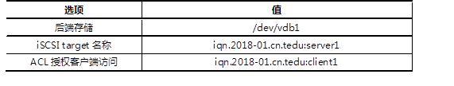
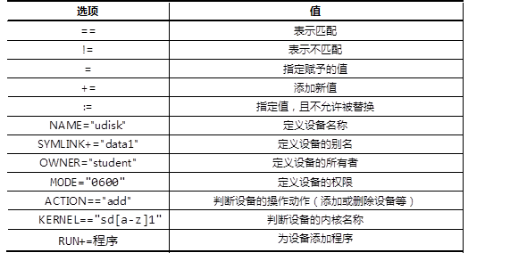

本案例要求先搭建好一台iSCSI服务器，并将整个磁盘共享给客户端：
使用2台RHEL7虚拟机，其中一台作为iSCSI服务器（192.168.4.5）、另外一台作为测试用的Linux客户机（192.168.4.100），如图-1所示。
图-1
在RHEL7系统中，默认通过targetcli软件包提供iSCSI服务，因此需要在服务端安装targetcli包并配置对应的服务，iSCSI服务主要配置选项如表-1所示。
表－1 iSCSI配置选项列表
客户端挂载iSCSI服务器：
实现此案例需要按照如下步骤进行。
步骤一：安装iSCSI服务器软件
1）使用yum安装targetcli软件包
- [root@proxy ~]# yum -y install targetcli
- .. ..
- [root@proxy ~]# yum info targetcli
- .. ..
步骤二：通过命令行配置iSCSI服务
1）真实主机准备底层存储磁盘
真实主机使用virt-manager工具为proxy虚拟机添加磁盘，如图-2所示。
图-2
双击打开虚拟机后添加磁盘设备，如图-3和图-4所示。
图-3
图-4
登陆到192.168.4.5主机，为新添加的磁盘准备分区：
- [root@proxy ~]# parted /dev/vdb mklabel gpt
- [root@proxy ~]# parted /dev/vdb mkpart primary 1 100%
2)使用targetcli定义后端存储
- [root@proxy ~]# targetcli
- /> ls
- /> backstores/block create /dev/vdb1
3）创建iqn对象
- /> /iscsi create iqn.2018-01.cn.tedu:server1
4) 授权客户机访问
- /> iscsi/iqn.2018-01.cn.tedu:server1/tpg1/acls create iqn.2018-01.cn.tedu:client1
5) 绑定存储
- />iscsi/iqn.2018-01.cn.tedu:server1/tpg1/luns create /backstores/block/iscsi_store
6) 存储绑定服务监听的地址，并保存配置
- /> iscsi/iqn.2018-01.cn.tedu:server1/tpg1/portals/ create 0.0.0.0
- /> saveconfig
- /> exit
步骤三：服务管理
1）启动服务
- [root@proxy ~]# systemctl {start|restart|stop|status} target
- [root@proxy ~]# systemctl enable target
2）查看端口信息
- [root@proxy ~]# ss -tlnp | grep :3260
3）关闭防火墙与SELinux
- [root@proxy ~]# systemctl stop firewalld
- [root@proxy ~]# setenforce 0
步骤四：客户端访问
1）客户端安装软件并启动服务
- [root@client ~]# yum -y install iscsi-initiator-utils
- [root@client ~]# systemctl restrt iscsi
2）设置本机的iqn名称
- [root@client ~]# vim /etc/iscsi/initiatorname.iscsi
- InitiatorName=iqn.2018-01.cn.tedu:client1
- 注意：必须跟服务器上配置的ACL一致！
3）发现远程target存储
提示：参考man iscsiadm！
- [root@client ~]# iscsiadm --mode discoverydb --type sendtargets --portal 192.168.4.5 –discover
- [root@client ~]# iscsiadm --mode node --targetname iqn.2018-01.cn.tedu:server1 --portal 192.168.4.5:3260 --login
3）客户端挂载iSCSI共享
- [root@client ~]# systemctl restart iscsi
- [root@client ~]# lsblk
4）分区、格式化、挂载
- [root@client ~]# parted /dev/sdb mklabel gpt
- [root@client ~]# parted /dev/sdb mkpart primary 1 800
- [root@client ~]# mount /dev/sdb1 /mnt
编写udev规则，实现以下目标：
对于Linux kernel 2.6及更新的操作系统版本udev是系统的设备管理器，udev会分析sysfs的数据，并根据自己的udev规则，实现如下功能：
udev默认规则存放在/etc/udev/rules.d目录下，通过修改此目录下的规则实现设备的命名、属性、链接文件等。
实现此案例需要按照如下步骤进行。
步骤一：编写udev规则
1）准备USB设备
使用virt-manager为虚拟机添加USB设备，如图-5所示。注意添加设备时一定要选择正确的USB设备，图-5仅是参考案例，每个人的USB品牌与型号都有可能不一样！
图-5
1）查看设备属性
2）编写udev规则文件
- [root@proxy ~]# vim /etc/udev/rules.d/70-usb.rules
- SUBSYSTEM=="block",ENV{DEVTYPE}="disk",KERNEL=="sda",ENV{ID_VENDOR}=="TOSHIBA",SYMLINK="udisk",RUN+="/usr/bin/wall udisk plugged in"
- SUBSYSTEM=="block",ACTION=="add",KERNEL=="sdb[0-9]",ENV{ID_VENDOR_ID}=="0930",ENV{DEVTYPE}=="partition",NAME="udisk%n"
注意：不能照抄，这里的变量都是需要根据实际情况而修改的！！！每个设备的属性都有所不同！！！
步骤二：添加设备测试结果
在virt-manager中删除、添加USB设备，测试自己的udev规则是否成功。
总结：
udev规则文件，常见指令操作符如表-2所示。
表－2 udev常见指令操作符
udev常用替代变量：
服务器利用NFS机制发布2个共享目录，要求如下：
从客户机访问NFS共享：
使用2台RHEL7虚拟机，其中一台作为NFS共享服务器（192.168.2.5）、另外一台作为测试用的Linux客户机（192.168.2.100），如图-5所示。
图-5
NFS共享的配置文件：/etc/exports 。
配置记录格式：文件夹路径 客户地址1(控制参数.. ..) 客户地址2(.. ..) 。
实现此案例需要按照如下步骤进行。
步骤一：配置NFS服务器，发布指定的共享
1）确认服务端程序、准备共享目录
软件包nfs-utils用来提供NFS共享服务及相关工具，而软件包rpcbind用来提供RPC协议的支持，这两个包在RHEL7系统中一般都是默认安装的：
- [root@proxy ~]# rpm -q nfs-utils rpcbind
- nfs-utils-1.3.0-0.48.el7.x86_64
- rpcbind-0.2.0-42.el7.x86_64
根据本例的要求，需要作为NFS共享发布的有/root、/usr/src这两个目录：
- [root@proxy ~]# ls -ld /root /usr/src/
- dr-xr-x---. 35 root root 4096 1月 15 18:52 /root
- drwxrwxr-x+ 4 root root 4096 1月 15 17:35 /usr/src/
2）修改/etc/exports文件，添加共享目录设置
默认情况下，来自NFS客户端的root用户会被降权，若要保留其root权限，注意应添加no_root_squash控制参数(没有该参数，默认root会被自动降级为普通账户)；另外，限制只读的参数为ro、可读可写为rw，相关配置操作如下所示：
- [root@proxy ~]# vim /etc/exports
- /root 192.168.2.100(rw,no_root_squash)
- /usr/src 192.168.2.0/24(ro)
3）启动NFS共享相关服务，确认共享列表
依次启动rpcbiind、nfs服务：
- [root@proxy ~]# systemctl restart rpcbind ; systemctl enable rpcbind
- [root@proxy ~]# systemctl restart nfs ; systemctl enable nfs
使用showmount命令查看本机发布的NFS共享列表：
- [root@proxy ~]# showmount -e localhost
- Export list for localhost:
- /usr/src 192.168.2.0/24
- /root 192.168.2.100
步骤二：从客户机访问NFS共享
1）启用NFS共享支持服务
客户机访问NFS共享也需要rpcbind服务的支持，需确保此服务已开启：
- [root@web1 ~]# systemctl restart rpcbind ; systemctl enable rpcbind
2）查看服务器提供的NFS共享列表
- [root@web1 ~]# showmount -e 192.168.2.5
- Export list for 192.168.2.5:
- /usr/src 192.168.2.0/24
- /root 192.168.2.100
3）从客户机192.168.2.100访问两个NFS共享，并验证权限
将远程的NFS共享/root挂载到本地的/root5文件夹，并验证可读可写：
- [root@web1 ~]# mkdir /root5 //建立挂载点
- [root@web1 ~]# mount 192.168.2.5:/root /root5 //挂载NFS共享目录
- [root@web1 ~]# df -hT /root5 //确认挂载结果
- Filesystem Type Size Used Avail Use% Mounted on
- 192.168.2.5:/root nfs 50G 15G 33G 31% /root5
- [root@web1 ~]# cd /root5 //切换到挂载点
- [root@web1 root5]# echo "NFS Write Test" > test.txt //测试写入文件
- [root@web1 root5]# cat test.txt //测试查看文件
- NFS Write Test
将远程的NFS共享/usr/src挂载到本地的/mnt/nfsdir，并验证只读：
- [root@web1 ~]# mkdir /mnt/nfsdir //建立挂载点
- [root@web1 ~]# mount 192.168.2.5:/usr/src /mnt/nfsdir/ //挂载NFS共享目录
- [root@web1 ~]# df -hT /mnt/nfsdir/ //确认挂载结果
- Filesystem Type Size Used Avail Use% Mounted on
- 192.168.2.5:/usr/src nfs 50G 15G 33G 31% /mnt/nfsdir
- [root@web1 ~]# cd /mnt/nfsdir/ //切换到挂载点
- [root@web1 nfsdir]# ls //读取目录列表
- debug install.log kernels test.txt
- [root@web1 nfsdir]# echo "Write Test." > pc.txt //尝试写入文件失败
- -bash: pc.txt: 只读文件系统
！！！！ 如果从未授权的客户机访问NFS共享，将会被拒绝。比如从NFS服务器本机尝试访问自己发布的/root共享（只允许192.168.2.100访问），结果如下所示：
- [root@proxy ~]# mkdir /root5
- [root@proxy ~]# mount 192.168.2.5:/root /root5
- mount.nfs: access denied by server while mounting 192.168.2.5:/root
4）设置永久挂载
- [root@web1 ~]# vim /etc/fstab
- .. ..
- 192.168.2.5:/usr/src nfsdir nfs default,ro 0 0
- 192.168.2.5:/root root5 nfs default 0 0
通过Multipath，实现以下目标：
配置2台虚拟机，每台虚拟机均为两块网卡：
表-3 各节点IP地址配置
多路径示意图，如图-6所示。
图-6
实现此案例需要按照如下步骤进行。
步骤一：存储节点上添加额外的磁盘（如果有环境，此步骤可用忽略）
使用KVM软件新建（或修改）虚拟机，为虚拟机额外添加一块硬盘。
步骤二：存储节点上安装并配置共享存储（如果有iscsi共享，此步骤可用忽略）
1) 定义后端存储
- [root@proxy ~]# targetcli
- /> ls
- /> backstores/block create /dev/vdb1
2）创建iqn对象
- /> /iscsi create iqn.2018-01.cn.tedu:server1
3) 授权客户机访问
- /> iscsi/iqn.2018-01.cn.tedu:server1/tpg1/acls create iqn.2018-01.cn.tedu:client1
4) 绑定存储
- />iscsi/iqn.2018-01.cn.tedu:server1/tpg1/luns create /backstores/block/iscsi_store
5) 绑定存储绑定监听地址，并保存配置
- /> iscsi/iqn.2018-01.cn.tedu:server1/tpg1/portals/ create 0.0.0.0
- /> saveconfig
- /> exit
步骤三：在应用服务器上安装并配置iSCSI客户端
1）安装客户端软件
- [root@web1 ~]# yum list | grep iscsi
- iscsi-initiator-utils.x86_64 6.2.0.873-14.el6 Server
- [root@web1 ~]# yum install -y iscsi-initiator-utils
2）发现存储服务器的共享磁盘
因为有两条链路都可以连接到共享存储，所以需要在两条链路上都发现它。
- [root@web1 ~]# iscsiadm --mode discoverydb --type sendtargets --portal 192.168.2.5 --discover
- 正在启动 iscsid： [确定]
- 192.168.2.5:3260,1 iqn.2018-01.cn.tedu:client1
- [root@web1 ~]# iscsiadm --mode discoverydb --type sendtargets --portal 201.1.2.5 --discover
- 201.1.2.5:3260,1 iqn.2018-01.cn.tedu:client1
3）登陆共享存储
只需要将iscsi服务重启就可以自动登陆。在login之前，只能看到本地的存储，登陆之后，将会多出两块新的硬盘。
- … …
- [root@web1 ~]# service iscsi restart
- 停止 iscsi： [确定]
- 正在启动 iscsi： [确定]
- [root@web1 ~]# lsblk
- NAME MAJ:MIN RM SIZE RO TYPE MOUNTPOINT
- sda 8:0 0 20G 0 disk
- ├─sda1 8:1 0 20G 0 part
- sdb 8:0 0 20G 0 disk
- ├─sdb1 8:1 0 20G 0 part
- vda 252:0 0 20G 0 disk
- ├─vda1 252:1 0 1G 0 part /boot
4）设置开机自启动
iscsi用于自动login远程存储，iscsid是守护进程。
- [root@web1 ~]# systemctl enable iscsid
- [root@web1 ~]# systemctl enable iscsi
步骤四：配置Multipath多路径
1）安装多路径软件包
- [root@web1 ~]# yum list | grep multipath
- device-mapper-multipath.x86_64 0.4.9-111.el7 Server
- device-mapper-multipath-libs.i686 0.4.9-111.el7 Server
- device-mapper-multipath-libs.x86_64 0.4.9-111.el7 Server
- [root@web1 ~]# yum install -y device-mapper-multipath
2）生成配置文件
- [root@web1 ~]# cd /usr/share/doc/device-mapper-multipath-0.4.9/
- [root@web1 ~]# ls multipath.conf
- [root@web1 ~]# cp multipath.conf /etc/multipath.conf
3）获取wwid
登陆共享存储后，系统多了两块硬盘，这两块硬盘实际上是同一个存储设备。应用服务器使用哪个都可以，但是如果使用sdb时，sdb对应的链路出现故障，它不会自动切换到sdc。
为了能够实现系统自动选择使用哪条链路，需要将这两块磁盘绑定为一个名称。通过磁盘的wwid来判定哪些磁盘是相同的。
取得一块磁盘wwid的方法如下：
- [root@web1 ~]# scsi_id --whitelisted --device=/dev/sdb
- 1IET 00010001
4）修改配置文件
首先声明自动发现多路径：
- [root@web1 ~]# vim /etc/multipath.conf
- defaults {
- user_friendly_names yes
- find_multipaths yes
- }
然后在文件的最后加入多路径声明，如果哪个存储设备的wwid和第（3）步获取的wwid一样，那么，为其取一个别名，叫mpatha。
- multipaths {
- multipath {
- wwid "1IET 00010001"
- alias mpatha
- }
- }
步骤五：启用Multipath多路径，并测试
1）启动Multipath，并设置为开机启动
- [root@web1 ~]# systemctl start multipathd
- [root@web1 ~]# systemctl enable multipathd
2）检查多路径设备文件
如果多路长设置成功，那么将在/dev/mapper下面生成名为mpatha的设备文件：
- [root@web1 ~]# ls /dev/mapper/
- control mpatha
3）对多路径设备文件执行分区、格式化、挂载操作
- [root@web1 ~]# fdisk -cu /dev/mapper/mpatha
- Device contains neither a valid DOS partition table, nor Sun, SGI or OSF disklabel
- Building a new DOS disklabel with disk identifier 0x205c887e.
- Changes will remain in memory only, until you decide to write them.
- After that, of course, the previous content won't be recoverable.
- Warning: invalid flag 0x0000 of partition table 4 will be corrected by w(rite)
- Command (m for help): n ＃创建分区
- Command action
- e extended
- p primary partition (1-4)
- p ＃分区类型为主分区
- Partition number (1-4): 1 ＃分区编号为1
- First sector (2048-4194303, default 2048): ＃起始扇区回车
- Using default value 2048
- Last sector, +sectors or +size{K,M,G} (2048-4194303, default 4194303): ＃回车
- Using default value 4194303
- Command (m for help): w ＃保存并退出
- The partition table has been altered!
- Calling ioctl() to re-read partition table.
新的分区名称应该是/dev/mapper/mpathap1，如果该文件不存在，则执行以下命令进行配置的重新载入：
- [root@web1 ~]# partprobe ; multipath -rr
- [root@web1 ~]# ls /dev/mapper/ ＃再次查看，将会看到新的分区
- control mpatha mpathap1
创建目录并挂载：
- [root@web1 ~]# mkfs.xfs /dev/mapper/mpathap1
- [root@web1 ~]# mkdir /data
- [root@web1 ~]# mount /dev/mapper/mpathap1 /data/
- [root@web1 ~]# df -h /data/
- Filesystem Size Used Avail Use% Mounted on
- /dev/mapper/mpathap1 2.0G 3.0M 1.9G 1% /data